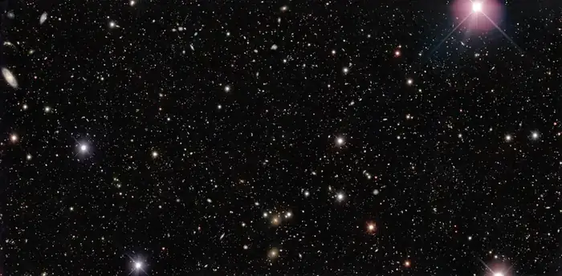
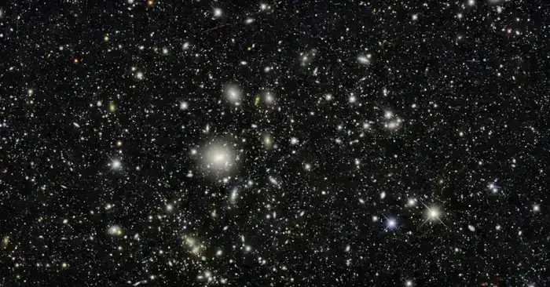

The three layers, properly defined
The Congressional Research Service’s explainer is the cleanest source, and it is worth quoting rather than paraphrasing:
- Surface web — content that is indexed and reachable through ordinary search engines.
- Deep web — content that is not indexed: corporate intranets, university portals, commercial databases, webmail, anything behind authentication or a form. Germany’s federal cyber-security agency puts it at roughly 90% of the web.
- Dark web — the part of the deep web that is intentionally concealed, reached through overlay networks such as Tor or I2P.
Two corrections follow immediately. First, the deep web is not sinister — your bank statement and your inbox are in it. Second, the dark web is not a single website or a directory; it is a protocol layer. “The dark web has 90% of the internet” is a category error that appears in almost every video on the subject.
How Tor works, in one paragraph
Tor — The Onion Router — sends traffic through three volunteer-operated relays and encrypts it in layers, one per hop, so that no single relay knows both who you are and what you asked for. It is free, open source, and run by a US non-profit. Its documented users include journalists, dissidents under censorship, human-rights organisations, whistleblowers, law enforcement, and criminals — a list that appears in essentially every official description, because all of it is true at once.
What actually happened on the dark web
The history is a sequence of takedowns, and the lesson of each is that anonymity is hard and operational mistakes are ordinary.
- Silk Road — the best-known marketplace, shut down in 2013; its operator was identified partly through conventional investigative work and his own digital trail.
- AlphaBay and Hansa — taken down in 2017 in a coordinated operation in which one marketplace was secretly run by police for weeks after the arrest.
- Child-abuse networks — repeatedly broken by exploiting the infrastructure rather than the encryption: hosting errors, payment trails, and compromised servers.
The pattern is consistent: encryption holds, people leak. That is also why the “hidden website” genre in this archive is less interesting than it looks.
The legitimate hidden web — a directory
This is the useful part. Vast amounts of genuine research sit in the deep web because it is unindexed, not because it is secret. Everything below is legal, free or institutional, and reachable with an ordinary browser.
- FOIA reading rooms — the CIA, FBI, NSA and State Department all publish declassified document libraries. This is where the proven conspiracies dossiers come from.
- National Archives catalogues — US NARA, the UK National Archives, Library of Congress, and the Bundesarchiv; millions of records, much of it unindexed by Google.
- The Internet Archive — the Wayback Machine plus texts, audio and software; indispensable for checking what a page said in 2009.
- Academic repositories — arXiv, PubMed Central, CORE, DOAJ, and university repositories (the Canterbury and BYU papers cited in this archive came from exactly this layer).
- Museum and library digital collections — the British Museum, the Met, the Rijksmuseum, the Library of Congress map division, Wikimedia Commons (source of every image on this site).
- Court and inquiry records — PACER in the US, the UK inquiry archives, the Church Committee reports, the 9/11 Commission files.
- Standards and patent databases — Google Patents, Espacenet, the USPTO; where “suppressed technology” claims can actually be checked.
There are no onion addresses here, and no directory of marketplaces. That is not squeamishness: the marketplaces are illegal, frequently scams, and the “link lists” that circulate are the main vector for malware. If you want to understand the dark web, the CRS report and the Tor Project’s own documentation will teach you more in twenty minutes than any list of links.
Why the myth persists
Because the true version is anticlimactic. “Most of the web is unindexed” is a database fact; “there is a secret internet of forbidden knowledge” is a story. The same gap between a technical truth and a good narrative runs through every page in this archive — the larger globe, the ice wall, Tartaria.
Sources for this page
- Congressional Research Service, The Dark Web: An Overview (2024)congress.gov
- Congressional Research Service, Dark Web (R44101) — Tor onion routingcongress.gov
- Britannica, “Tor”britannica.com
- German BSI, “Dark net and deep web”bsi.bund.de
- IBM, “What is the dark web?”ibm.com
- CrowdStrike, “Deep web vs dark web”crowdstrike.com
- The Conversation, “Explainer: what is the dark web?”theconversation.com
- Tor Project — official documentationtorproject.org
Open resources on this topic
- PapersOpen-access articles: DOAJ · PubMed Central · Internet Archive Scholar
- BooksPublic-domain and borrowable copies: Open Library · Project Gutenberg · Google Books · Internet Archive
Cite this page
Momin, S. (2026). Deep Web & Dark Web. The Larger World Archive. https://drsamonline.github.io/LARGE_GLOBE/deep-web.htmlMomin, Sohil. “Deep Web & Dark Web.” The Larger World Archive, 2026, https://drsamonline.github.io/LARGE_GLOBE/deep-web.html.Momin, Sohil. “Deep Web & Dark Web.” The Larger World Archive, 2026. https://drsamonline.github.io/LARGE_GLOBE/deep-web.html.@misc{deep2026deep,
author = {Momin, Sohil},
title = {Deep Web & Dark Web},
year = {2026},
howpublished = {The Larger World Archive},
url = {https://drsamonline.github.io/LARGE_GLOBE/deep-web.html},
note = {Last reviewed 20 November 2026}
}Last reviewed 20 November 2026 · Corrections policy · this page is not peer reviewed
Maps, diagrams and images


